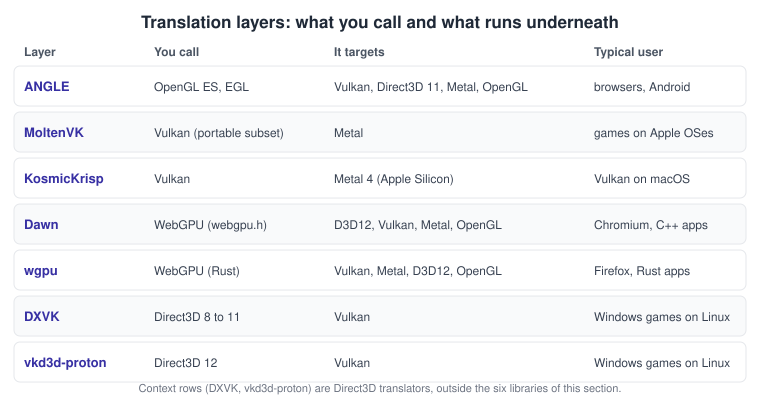
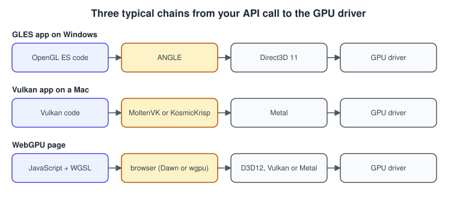
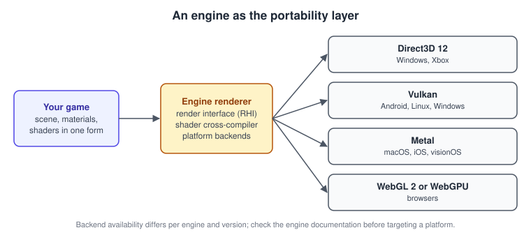

Cross-Platform Translation Layers
|
This content was generated with the assistance of AI and should be verified against the official documentation before being relied on in production. |
This page was checked in November 2026. A translation layer is a library that exposes one graphics API and implements it on top of another. It lets code written for an API that a platform lacks, or no longer maintains, run on the API the platform does support. The layers described here are ANGLE, MoltenVK, KosmicKrisp, Dawn and wgpu, with DXVK and vkd3d-proton as Direct3D context. All of them are open source. The examples need a C compiler (ANGLE and Vulkan examples) or a browser with WebGPU (the JavaScript example); the Apple layers need macOS or iOS with Xcode. The details of the underlying APIs are in the sub-sections for OpenGL, Vulkan, Metal and WebGL, and Graphics, Canvas and OpenGL ES on Android explains how Android uses ANGLE.
Why translation layers exist
No graphics API runs everywhere. Direct3D is limited to Microsoft platforms, Metal to Apple platforms, and Vulkan is missing on Apple platforms. OpenGL is frozen at 4.6 and is deprecated on Apple platforms (it has been since macOS 10.14 in 2018, and macOS stopped at OpenGL 4.1). OpenGL drivers differ in quality between vendors. Layers solve four practical problems:
-
Reach. A Vulkan renderer can run on Apple hardware through Metal, and a WebGPU page runs on whatever native API the browser uses.
-
Consistency. Browsers run WebGL through ANGLE so that every Windows GPU driver is exercised through the same well-tested Direct3D 11 or Vulkan path rather than through vendor OpenGL drivers.
-
Longevity. Legacy OpenGL and Direct3D 9 to 11 software keeps running on systems whose drivers no longer ship those APIs natively.
-
Sandboxing. A browser validates and rewrites every command a web page issues, which a pass-through driver would not do.
The cost is real: an extra translation step on the CPU, a smaller feature set than the source API in some cases, and another component whose bugs you inherit.

The layers one by one
ANGLE: OpenGL ES on other APIs
ANGLE ("Almost Native Graphics Layer Engine", a Google project) implements OpenGL ES and EGL on top of Vulkan, Direct3D
11, desktop OpenGL, OpenGL ES and Metal, and is the WebGL backend of Chromium. Firefox and WebKit use it for parts of their
WebGL stacks as well, and Android can run its OpenGL ES drivers on ANGLE over Vulkan as the device’s GLES implementation, a
direction Google has described as the long-term plan for Android. For an application, ANGLE is a library that provides
libEGL and libGLESv2: you link against them instead of the system versions, and you choose the backend when you create
the EGL display.
#include <EGL/egl.h>
#include <EGL/eglext.h>
#include <stdio.h>
/* Ask ANGLE for its Vulkan backend. Replace the value with
EGL_PLATFORM_ANGLE_TYPE_D3D11_ANGLE, EGL_PLATFORM_ANGLE_TYPE_METAL_ANGLE or
EGL_PLATFORM_ANGLE_TYPE_OPENGL_ANGLE to pick another backend. */
EGLDisplay open_angle_display(EGLNativeDisplayType native) {
PFNEGLGETPLATFORMDISPLAYEXTPROC getPlatformDisplay =
(PFNEGLGETPLATFORMDISPLAYEXTPROC)eglGetProcAddress("eglGetPlatformDisplayEXT");
if (!getPlatformDisplay) { fprintf(stderr, "EGL_ANGLE_platform_angle missing\n"); return EGL_NO_DISPLAY; }
const EGLint attribs[] = {
EGL_PLATFORM_ANGLE_TYPE_ANGLE, EGL_PLATFORM_ANGLE_TYPE_VULKAN_ANGLE,
EGL_NONE
};
EGLDisplay display = getPlatformDisplay(EGL_PLATFORM_ANGLE_ANGLE, (void *)native, attribs);
EGLint major = 0, minor = 0;
if (display == EGL_NO_DISPLAY || !eglInitialize(display, &major, &minor)) return EGL_NO_DISPLAY;
printf("EGL %d.%d via ANGLE\n", major, minor);
return display; /* continue with eglChooseConfig, eglCreateContext as usual */
}ANGLE is tested against the OpenGL ES conformance suites, so OpenGL ES code should behave alike on its backends. What it cannot give you is desktop OpenGL: there is no compatibility profile, no geometry shader in the ES 3.0 and 3.1 levels, and the maximum ES level depends on the backend and the GPU.
MoltenVK and KosmicKrisp: Vulkan on Metal
Vulkan is not available on Apple operating systems, so two open-source layers implement it over Metal:
-
MoltenVK (Khronos, with Valve and others) maps Vulkan calls to Metal calls at runtime and translates SPIR-V shaders to Metal Shading Language. It implements a portability subset of Vulkan: some features that Metal cannot express (for example triangle fans and geometry shaders) are missing, and the application discovers this through the
VK_KHR_portability_subsetdevice extension. -
KosmicKrisp is a Vulkan driver in Mesa for Apple Silicon Macs, implemented on Metal 4. Mesa’s documentation describes it as Vulkan conformant for macOS on Apple Silicon and notes that it requires macOS 26 or later and does not yet support iOS. It follows Mesa’s driver architecture (NIR shaders compiled to Metal) instead of translating call by call.
Both are installed through the LunarG Vulkan SDK or a package manager and discovered by the Vulkan loader. Because they are "portability" implementations, newer loaders hide them unless the application opts in, with an instance extension and a flag:
#include <vulkan/vulkan.h>
#include <stdlib.h>
VkInstance create_portable_instance(void) {
const char *extensions[] = {
VK_KHR_PORTABILITY_ENUMERATION_EXTENSION_NAME, /* lets the loader list MoltenVK */
VK_KHR_GET_PHYSICAL_DEVICE_PROPERTIES_2_EXTENSION_NAME /* needed by the portability subset */
};
VkApplicationInfo app = { VK_STRUCTURE_TYPE_APPLICATION_INFO };
app.pApplicationName = "Bookshelf";
app.apiVersion = VK_API_VERSION_1_3;
VkInstanceCreateInfo ci = { VK_STRUCTURE_TYPE_INSTANCE_CREATE_INFO };
ci.flags = VK_INSTANCE_CREATE_ENUMERATE_PORTABILITY_BIT_KHR;
ci.pApplicationInfo = &app;
ci.enabledExtensionCount = 2;
ci.ppEnabledExtensionNames = extensions;
VkInstance instance = VK_NULL_HANDLE;
if (vkCreateInstance(&ci, NULL, &instance) != VK_SUCCESS) exit(1);
/* When you create the logical device, also enable "VK_KHR_portability_subset" if the physical
device lists it, and read its feature structure before using triangle fans or similar. */
return instance;
}Which version of Vulkan a layer exposes changes with every release, so query VkPhysicalDeviceProperties::apiVersion and
the feature structures at runtime, and read the layer’s own documentation (the
MoltenVK runtime user guide lists
the supported extensions). Apple’s own debugging tools work with both layers because the final work is Metal work, while
RenderDoc sees only the Vulkan calls above the layer.
Dawn and wgpu: WebGPU implementations
WebGPU is a W3C API designed to sit over Direct3D 12, Metal and Vulkan. Two open-source libraries implement it and are used both inside browsers and as native libraries:
-
Dawn (Google, C++) powers WebGPU in Chromium and implements the shared
webgpu.hC header. Its backends are Direct3D 11 and 12, Metal, Vulkan and OpenGL or OpenGL ES. -
wgpu (Rust) powers WebGPU in Firefox and is the graphics layer of many Rust engines. Its backends are Vulkan, Metal, Direct3D 12 and OpenGL ES; on the web it targets the browser’s own WebGPU. Its shader translator is Naga.
Both translate WGSL, the WebGPU shading language, to the native shader language (HLSL or DXIL, MSL, SPIR-V). Chromium’s shader compiler is Tint, part of Dawn. Because WebGPU has a defined conformance suite, a program that follows the specification behaves the same on all of them. In JavaScript you can see which implementation you are on:
// Report the adapter the browser selected for WebGPU.
async function describeGpu() {
if (!('gpu' in navigator)) return 'WebGPU is not available';
const adapter = await navigator.gpu.requestAdapter({ powerPreference: 'high-performance' });
if (!adapter) return 'No suitable adapter';
const info = adapter.info; // GPUAdapterInfo: vendor, architecture, device, description
const features = [...adapter.features].sort();
return {
vendor: info.vendor,
architecture: info.architecture,
description: info.description,
supportsTimestamps: adapter.features.has('timestamp-query'),
features,
maxTextureDimension2D: adapter.limits.maxTextureDimension2D,
};
}
describeGpu().then(console.log);Source: MDN: GPUAdapter.info
For native Rust programs, wgpu selects the backend from an environment variable, which is the quickest way to compare the same code on two native APIs:
# Linux or Windows: force the Vulkan backend; use dx12, metal or gl for the others.
WGPU_BACKEND=vulkan cargo run --release
# macOS: force Metal and print the chosen adapter and backend at info level.
WGPU_BACKEND=metal RUST_LOG=wgpu_core=info cargo run --releaseDXVK and vkd3d-proton: Direct3D on Vulkan (context)
DXVK translates Direct3D 8 to 11 to Vulkan and vkd3d-proton translates Direct3D 12 to Vulkan. They exist so that Windows games run on Linux through Proton, and they are the largest everyday use of translation layers, but they are outside the six libraries of this section: they do not help you write new graphics code, only explain why a Windows game runs on Vulkan on a handheld.
Shaders in translation
Every layer must translate shaders as well as API calls. The usual route is an intermediate representation: GLSL or HLSL compiles to SPIR-V, and a cross-compiler such as SPIRV-Cross emits MSL, HLSL or GLSL. Naga (wgpu) and Tint (Dawn) do the same job for WGSL. The language and IR landscape is in Shading Languages Landscape. Layers also hide differences in the coordinate conventions: OpenGL clip depth runs from -1 to 1, Direct3D, Vulkan, Metal and WebGPU use 0 to 1, and the Y axis of normalised device coordinates is flipped in Vulkan’s framebuffer space. The layer inserts the equivalent of
in the vertex output so that OpenGL ES shaders still produce correct depth. See Coordinate Spaces and Transforms for the full table. The layer cannot fix everything: precision of intermediate values, undefined behaviour in the source shader and the cost of emulated features (for example transform feedback or tessellation on a backend without it) differ between backends.

Engines as portability layers
A game engine is the translation layer most developers use without noticing. Unity, Unreal Engine and Godot each define a render hardware interface (RHI) with one backend per native API, and a shader pipeline that compiles the engine’s shader language (HLSL in Unity and Unreal; Godot uses its own GLSL-like language) to each backend. The same scene, material and shader assets then run on Direct3D 12, Vulkan, Metal, OpenGL ES or WebGL 2, depending on the platform and the project settings. The trade-offs mirror those of the standalone layers, but the engine owns the whole path, so the feature set it exposes is the intersection of its backends (plus platform-specific fallbacks) and you work at a higher level of abstraction.

The Unity manual lists the graphics APIs per platform in Graphics APIs in Unity, and the Unreal Engine documentation describes the RHI under Graphics Programming for Unreal Engine. Engine and platform support changes with each release, so check both pages for your version.
Choosing between layers
| Situation | Good fit | Watch out for |
|---|---|---|
An existing OpenGL ES renderer must run on Windows and Apple platforms |
ANGLE with its D3D11 or Metal backend |
ES level limits, no desktop OpenGL features. |
A Vulkan renderer must run on a Mac |
MoltenVK, or KosmicKrisp on Apple Silicon with macOS 26 or later |
Portability subset features, shader translation time, iOS support differs. |
A new renderer that should run in browsers and natively |
WebGPU through Dawn or wgpu, with WGSL shaders |
Less control than Vulkan; extensions (such as timestamp queries) are optional. |
A game that already uses an engine |
The engine’s own backends |
Platform support depends on the engine version. |
Maximum performance on one platform |
The native API (Direct3D 12, Metal, Vulkan) |
You write one backend per platform. |
Performance notes: a layer adds CPU overhead per call and may add a compile step the first time a shader or pipeline is used, which shows up as a hitch. Cache compiled pipelines (Vulkan pipeline caches, Metal binary archives, the browser’s own cache) and warm them at load time, and measure on the native API to separate layer cost from application cost (see Performance and Profiling).
Common mistakes
-
Assuming a layer exposes every extension of the source API. Query features and extensions at runtime.
-
Shipping a build that was tested only on one backend. Run the same scene on each backend you ship.
-
Debugging at the wrong level. A capture of the Vulkan calls above MoltenVK shows what you asked for, and a Metal capture shows what the layer produced; use both.
-
Forgetting the portability flags in Vulkan on Apple platforms, which makes the loader report no devices.
-
Treating a layer as a way to avoid learning the target API. Layers hide differences, they do not remove them.
What the books say, and where they are outdated
The two Java 3D books in this section describe an earlier layering of the same idea. Java 3D sits above the native graphics API and, in its 1.x releases, shipped separate rendering pipelines for OpenGL and Direct3D that a system property selected at startup, so one scene graph ran on either API. That is the same trade-off a translation layer makes today, only inside one library. The community-maintained Java 3D (JogAmp, 1.7.2 on JOGL 2.6) now runs on JOGL, which is a Java binding of OpenGL; OpenGL is deprecated on Apple platforms, and the Direct3D pipeline of the original is gone. Daniel Selman’s Java 3D Programming and Sun’s The Java 3D API Specification both predate every layer in this page; where they mention renderer selection or native pipelines, the modern equivalents are the backends and RHIs described above.
See it in
OpenGL: OpenGL ES on iOS and macOS; WebGL: WebGPU: Overview and Comparison with WebGL; Metal: metal-cpp and Game Porting; Vulkan: Vulkan on Apple: MoltenVK and KosmicKrisp; Unity: Build Profiles and Platforms; Unreal Engine: Packaging for Desktop.
References
-
Dawn and webgpu-headers
-
wgpu and wgpu repository
-
DXVK and vkd3d-proton (context)
-
Unity: Graphics APIs and Unreal Engine: Graphics Programming
-
Daniel Selman, Java 3D Programming: Manning